IU Homecoming
ASK:
Document the annual Homecoming parade themed "Wizard of Oz", and simultaneously design a data visualization for the Media School.
INSIGHT:
The parade route changed this year, heading directly toward the IMU. This shift offered the opportunity to shoot from an elevated vantage point.
CONCEPT:
Inspired by the parade theme, I designed an infographic that used the Oz aesthetic to map out the actual employment statistics and post-grad destinations for Media School students.
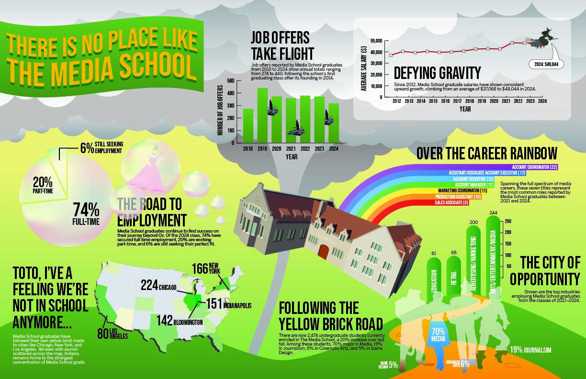
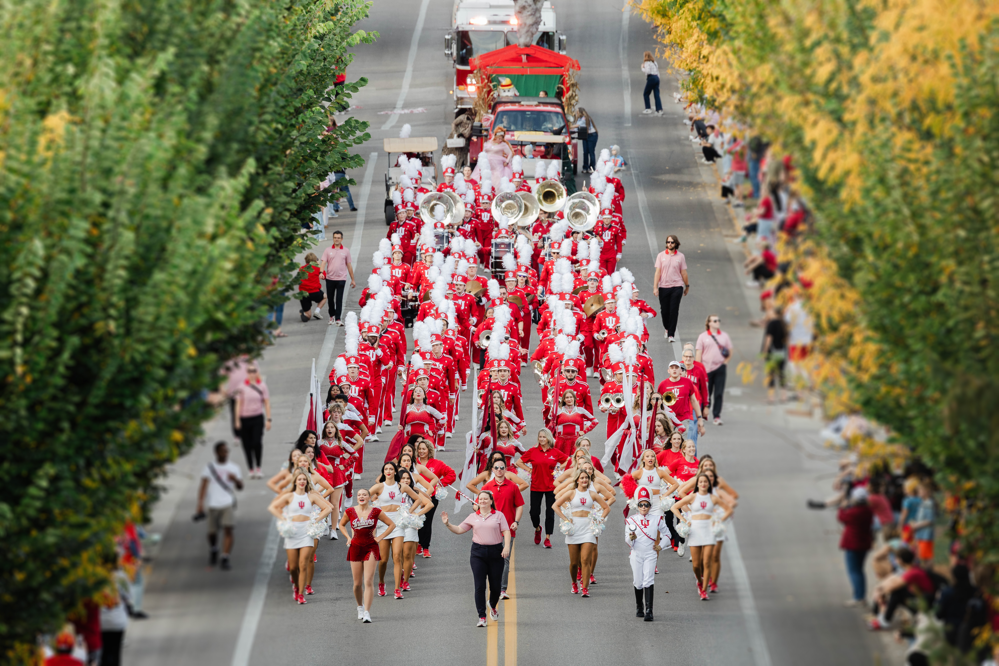
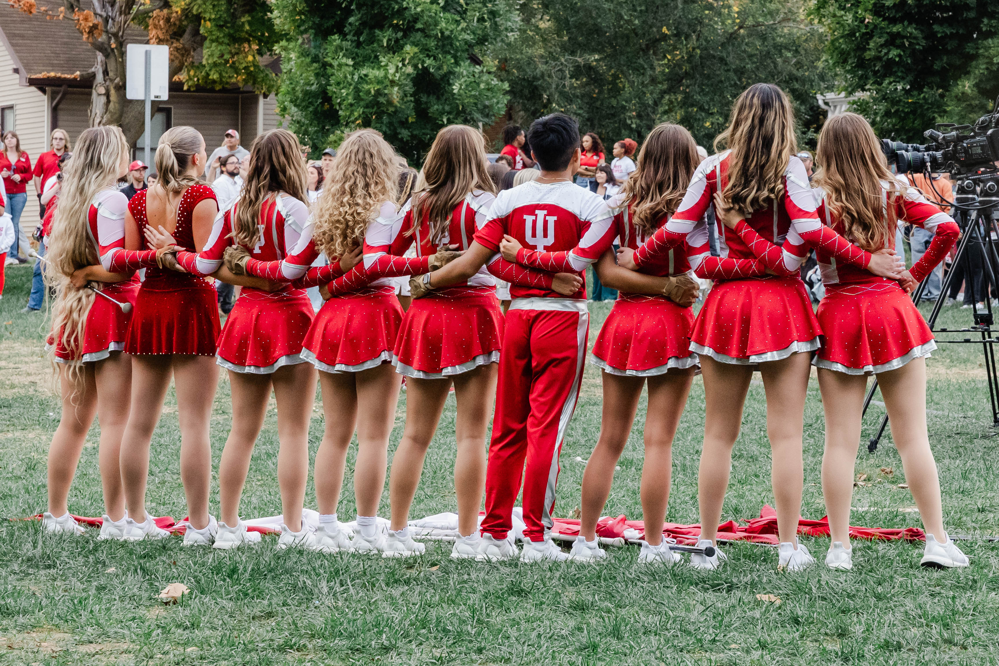

 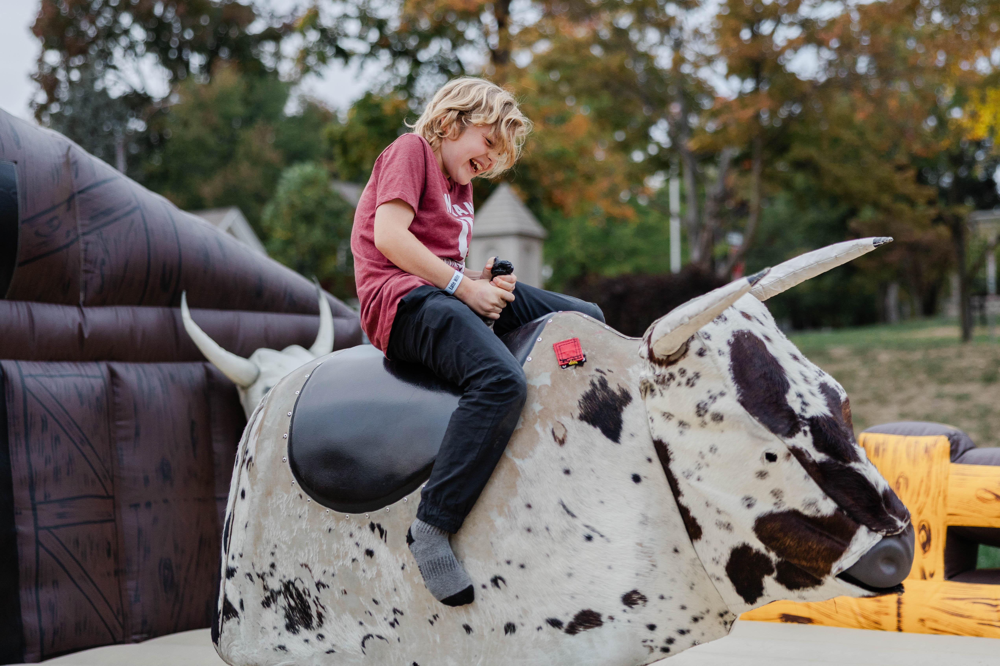
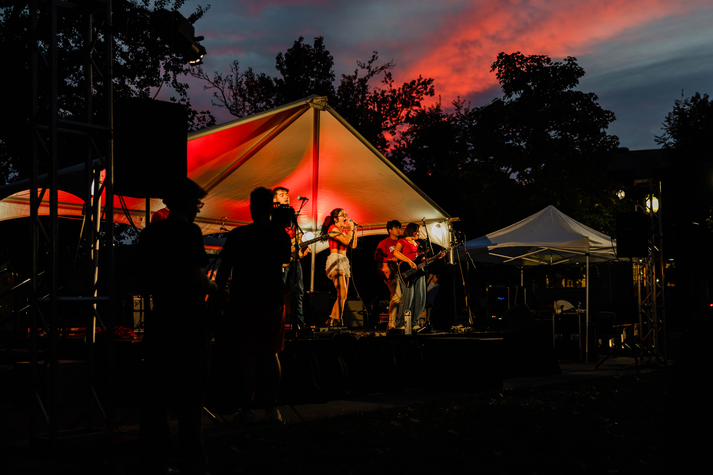
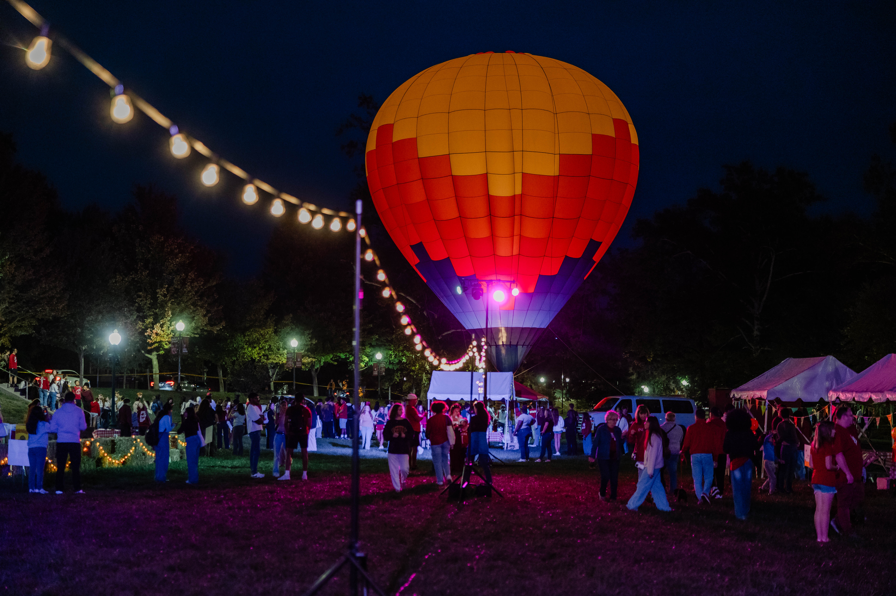
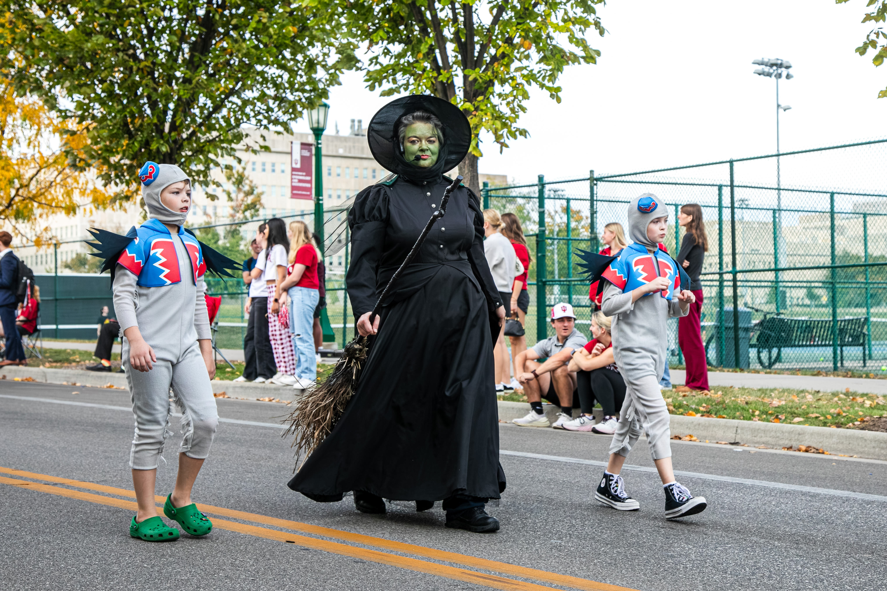
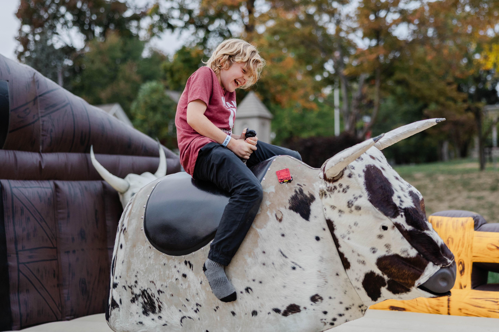
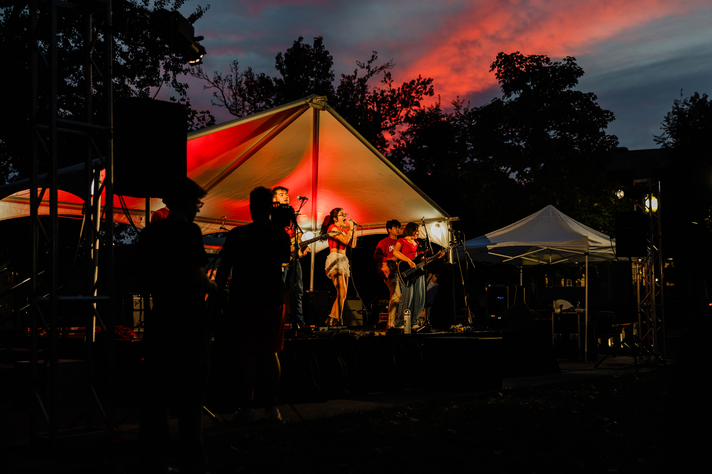
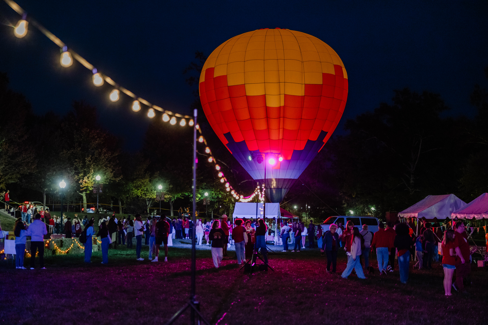
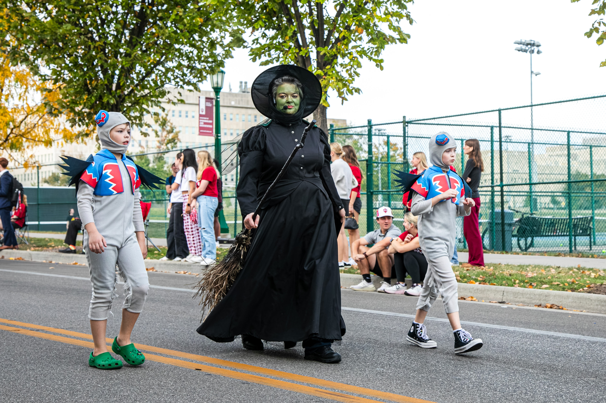
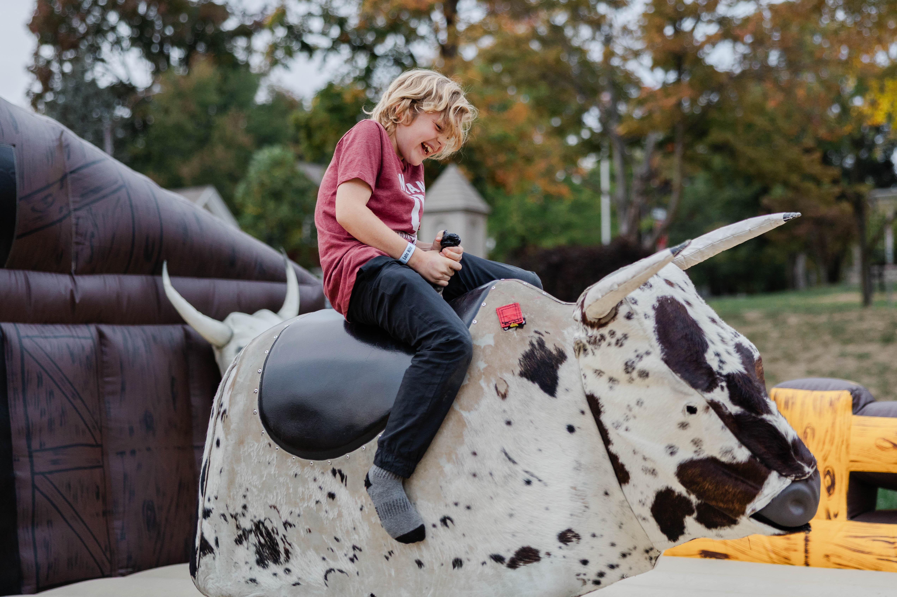
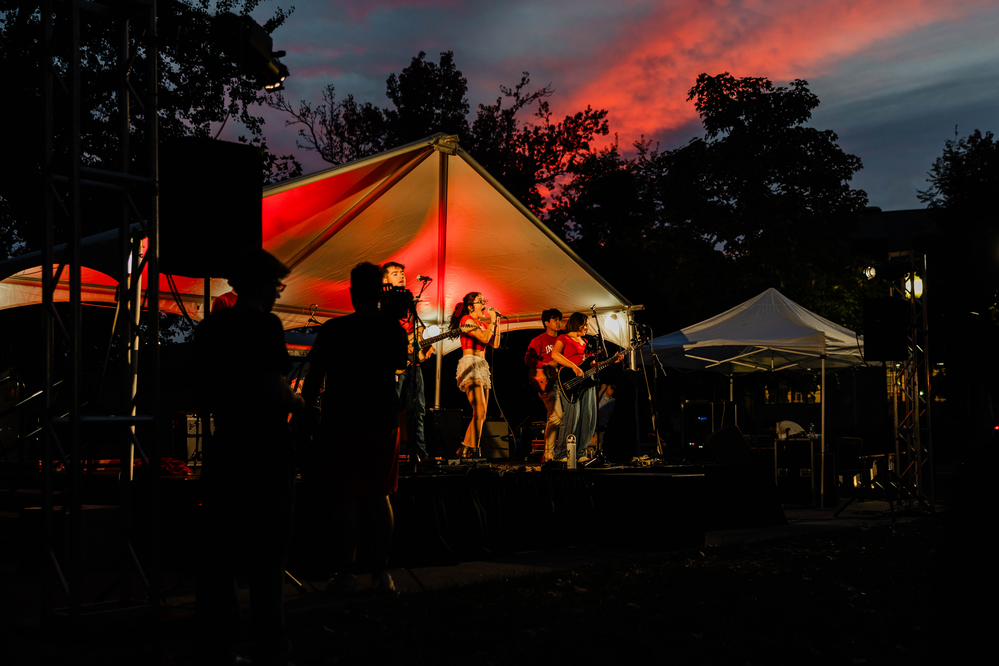
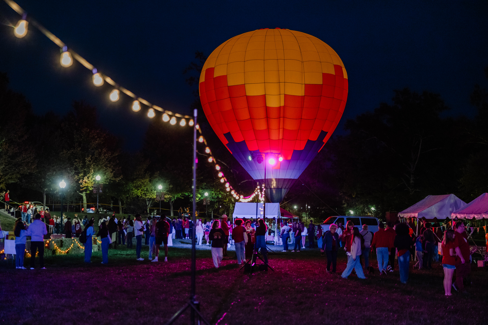
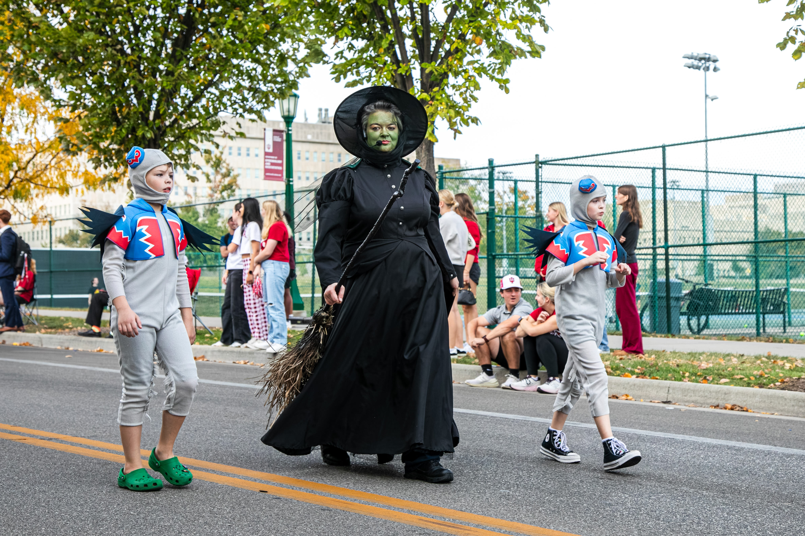